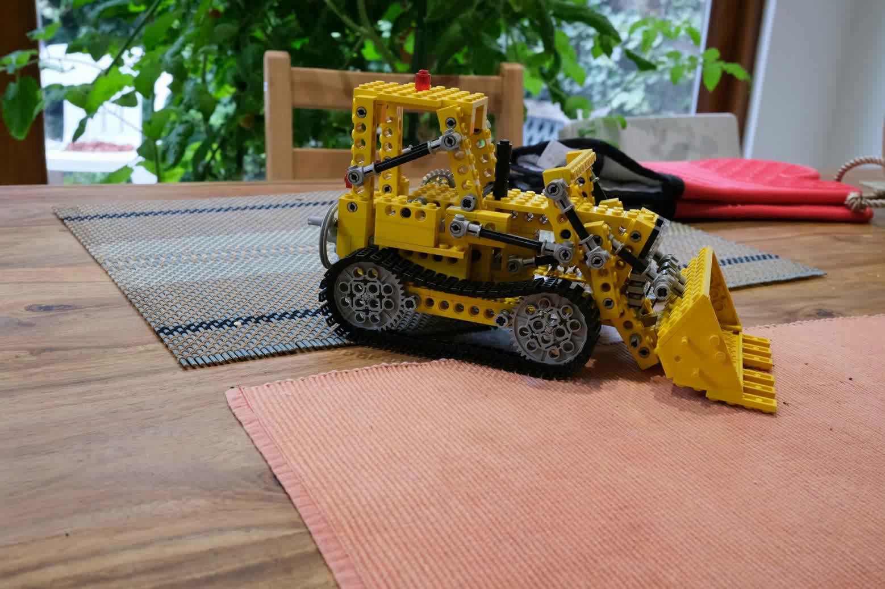
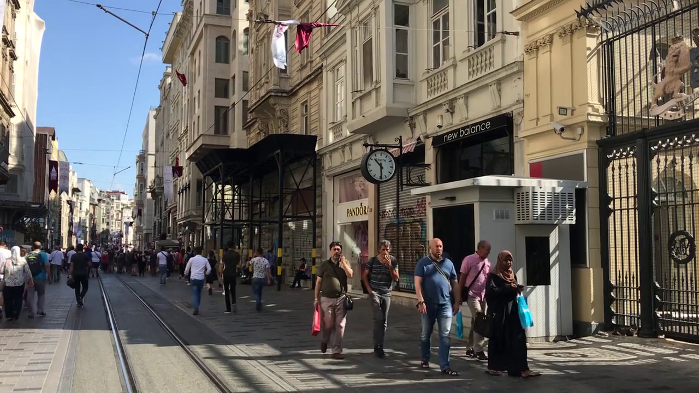
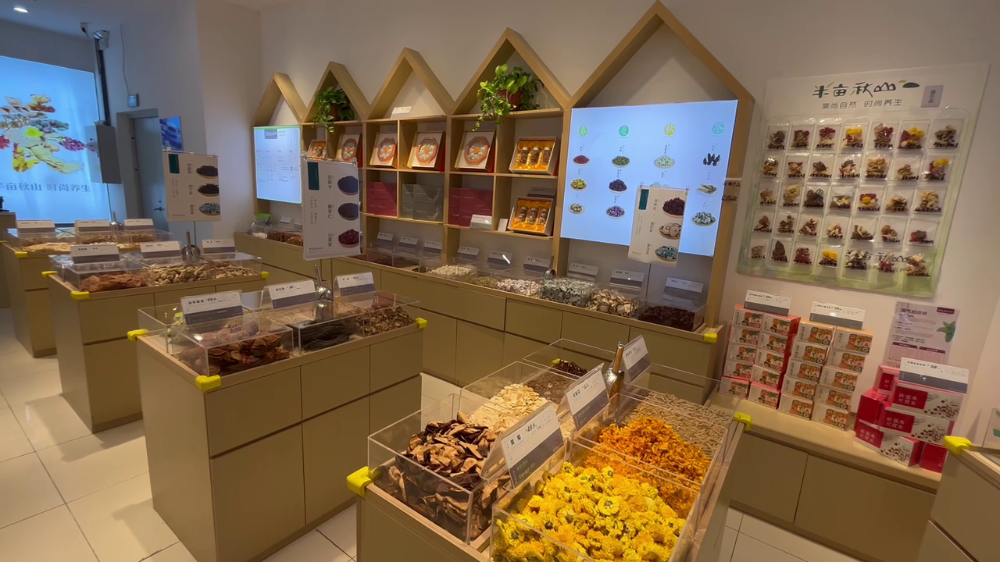
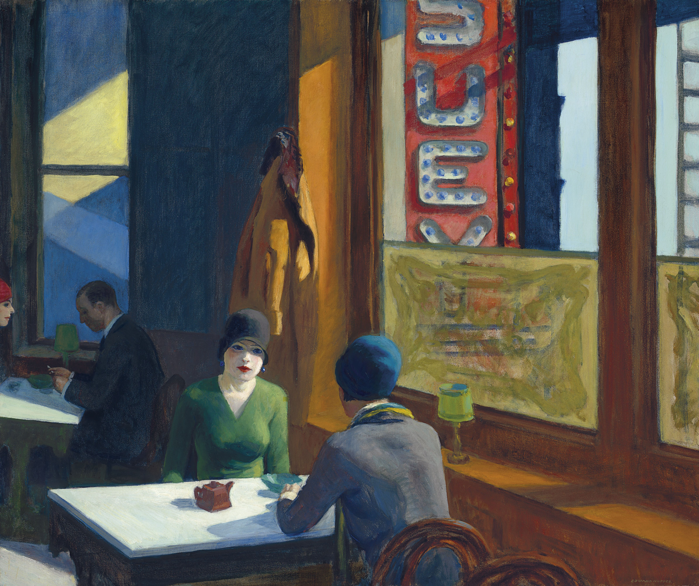
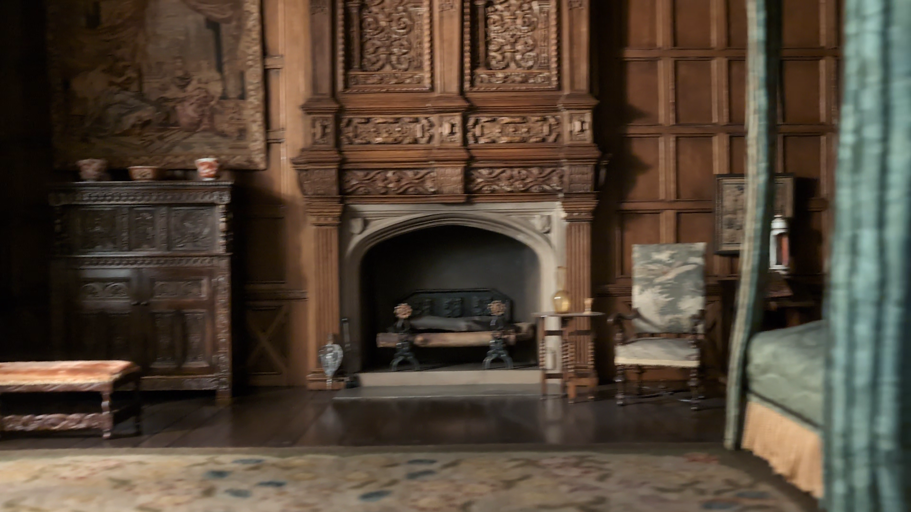
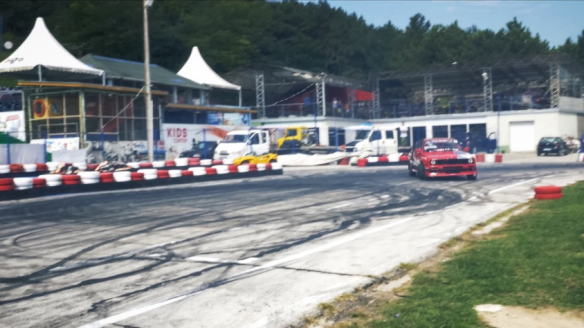
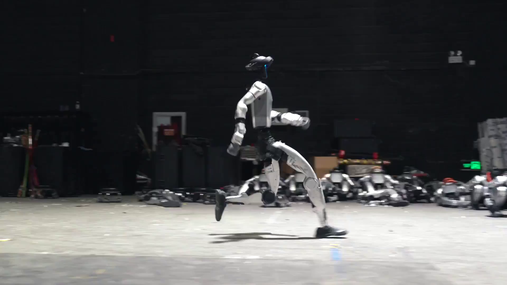
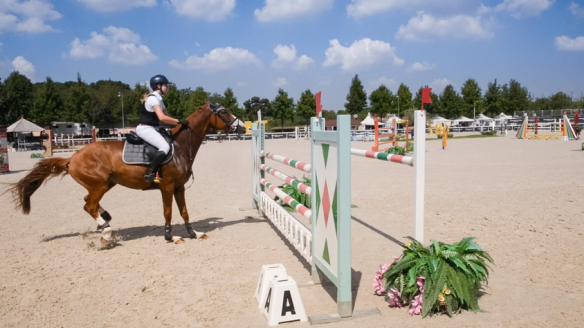
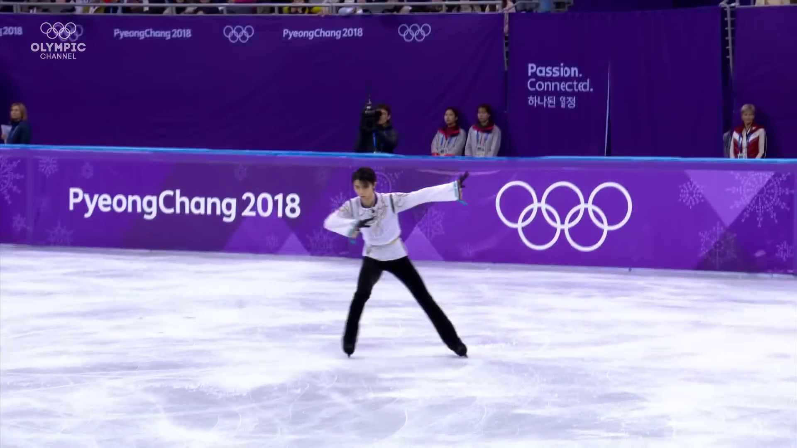
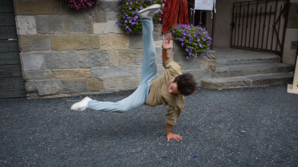

Interactive examples
Pick a scene below to explore in 3D! Press Space to play/pause, click and drag to change viewpoint.
[Demo requres browser with WebGL2 support.]
Loading...
(Note: scene geometry is downsampled for faster loading. Firefox may not properly render point clouds.)












Static Example
Dynamic Example